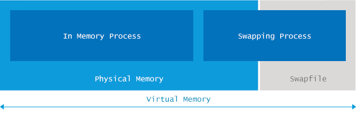

- 01 阅读此专栏的正确姿势.md.html
- 02 环境准备：千里之行，始于足下.md.html
- 03 常用性能指标：没有量化，就没有改进.md.html
- 04 JVM 基础知识：不积跬步，无以至千里.md.html
- 05 Java 字节码技术：不积细流，无以成江河.md.html
- 06 Java 类加载器：山不辞土，故能成其高.md.html
- 07 Java 内存模型：海不辞水，故能成其深.md.html
- 08 JVM 启动参数详解：博观而约取、厚积而薄发.md.html
- 09 JDK 内置命令行工具：工欲善其事，必先利其器.md.html
- 10 JDK 内置图形界面工具：海阔凭鱼跃，天高任鸟飞.md.html
- 11 JDWP 简介：十步杀一人，千里不留行.md.html
- 12 JMX 与相关工具：山高月小，水落石出.md.html
- 13 常见的 GC 算法（GC 的背景与原理）.md.html
- 14 常见的 GC 算法（ParallelCMSG1）.md.html
- 15 Java11 ZGC 和 Java12 Shenandoah 介绍：苟日新、日日新、又日新.md.html
- 16 Oracle GraalVM 介绍：会当凌绝顶、一览众山小.md.html
- 17 GC 日志解读与分析（基础配置）.md.html
- 18 GC 日志解读与分析（实例分析上篇）.md.html
- 19 GC 日志解读与分析（实例分析中篇）.md.html
- 20 GC 日志解读与分析（实例分析下篇）.md.html
- 21 GC 日志解读与分析（番外篇可视化工具）.md.html
- 22 JVM 的线程堆栈等数据分析：操千曲而后晓声、观千剑而后识器.md.html
- 23 内存分析与相关工具上篇（内存布局与分析工具）.md.html
- 24 内存分析与相关工具下篇（常见问题分析）.md.html
- 25 FastThread 相关的工具介绍：欲穷千里目，更上一层楼.md.html
- 26 面临复杂问题时的几个高级工具：它山之石，可以攻玉.md.html
- 27 JVM 问题排查分析上篇（调优经验）.md.html
- 28 JVM 问题排查分析下篇（案例实战）.md.html
- 29 GC 疑难情况问题排查与分析（上篇）.md.html
- 30 GC 疑难情况问题排查与分析（下篇）.md.html
- 31 JVM 相关的常见面试问题汇总：运筹策帷帐之中，决胜于千里之外.md.html
- 32 应对容器时代面临的挑战：长风破浪会有时、直挂云帆济沧海.md.html
24 内存分析与相关工具下篇（常见问题分析）
Java 程序的内存可以分为几个部分：堆（Heap space）、非堆（Non-Heap）、栈（Stack）等等，如下图所示：
最常见的 java.lang.OutOfMemoryError 可以归为以下类型。
OutOfMemoryError: Java heap space
JVM 限制了 Java 程序的最大内存使用量，由 JVM 的启动参数决定。
其中，堆内存的最大值，由 JVM 启动参数 -Xmx 指定。如果没有明确指定，则根据平台类型（OS 版本 + JVM 版本）和物理内存的大小来计算默认值。
假如在创建新的对象时，堆内存中的空间不足以存放新创建的对象，就会引发“java.lang.OutOfMemoryError: Java heap space”错误。不管机器上还没有空闲的物理内存，只要堆内存使用量达到最大内存限制，就会抛出这个错误。
原因分析
产生“java.lang.OutOfMemoryError: Java heap space”错误的原因，很多时候就类似于将 XXL 号的对象，往 S 号的 Java heap space 里面塞。其实清楚了原因，问题就很容易解决了：只要增加堆内存的大小，程序就能正常运行。另外还有一些比较复杂的情况，主要是由代码问题导致的：
- 超出预期的访问量/数据量：应用系统设计时，一般是有“容量”定义的，部署这么多机器，用来处理一定流量的数据/业务。如果访问量突然飙升，超过预期的阈值，类似于时间坐标系中针尖形状的图谱。那么在峰值所在的时间段，程序很可能就会卡死、并触发“java.lang.OutOfMemoryError: Java heap space”错误。
- 内存泄露（Memory leak）：这也是一种经常出现的情形。由于代码中的某些隐蔽错误，导致系统占用的内存越来越多。如果某个方法/某段代码存在内存泄漏，每执行一次，就会（有更多的垃圾对象）占用更多的内存。随着运行时间的推移，泄漏的对象耗光了堆中的所有内存，那么“java.lang.OutOfMemoryError: Java heap space”错误就爆发了。
一个非常简单的示例
以下代码非常简单，程序试图分配容量为 16M 的 int 数组。如果指定启动参数 -Xmx16m，那么就会发生“java.lang.OutOfMemoryError: Java heap space”错误。而只要将参数稍微修改一下，变成 -Xmx20m，错误就不再发生。
public class OOM {
static final int SIZE=16*1024*1024;
public static void main(String[] a) {
int[] i = new int[SIZE];
}
}
解决方案
如果设置的最大内存不满足程序的正常运行，只需要增大堆内存即可，配置参数可以参考下文。
但很多情况下，增加堆内存空间并不能解决问题。比如存在内存泄漏，增加堆内存只会推迟“java.lang.OutOfMemoryError: Java heap space”错误的触发时间。
当然，增大堆内存，可能会增加 GC 暂停时间的时间，从而影响程序的 吞吐量或延迟。
如果想从根本上解决问题，则需要排查分配内存的代码，简单来说就是需要搞清楚下列问题：
- 哪类对象占用了最多内存？
- 这些对象是在哪部分代码中分配的。
要搞清这一点，可能需要花费不少时间来分析。下面是大致的流程：
- 获得在生产服务器上执行堆转储（heap dump）的权限。“转储”(Dump)是堆内存的快照，稍后可以用于内存分析。这些快照中可能含有机密信息，例如密码、信用卡账号等，所以有时候由于企业的安全限制，要获得生产环境的堆转储并不容易。需要基于一些安全策略的情况下，既保证机密信息不泄露又能达到我们的目的（比如使用脱敏机制）。
- 在适当的时间执行堆转储。一般来说，内存分析需要比对多个堆转储文件，假如获取的时机不对，那就可能是一个“废”的快照。另外，每次执行堆转储，都会对 JVM 进行“冻结”，所以生产环境中，也不能随意地执行太多的 Dump 操作，否则系统缓慢或者卡死，你的麻烦就大了。
- 用另一台机器来加载 Dump 文件。一般来说，如果出问题的 JVM 内存是 8GB，那么分析 Heap Dump 的机器内存需要大于 8GB，打开转储分析软件（我们推荐 Eclipse MAT，当然你也可以使用其他工具）。
- 检测快照中占用内存最大的 GC roots。这对新手来说可能有点困难，但这也会加深你对堆内存结构以及其他机制的理解。
- 接下来，找出可能会分配大量对象的代码。如果对整个系统非常熟悉，可能很快就能定位了。
一般来说，有了这些信息，就可以帮助我们定位到问题的根源，从而对症下药，例如适当地精简数据结构/模型，只占用必要的内存即可解决问题。
当然，根据内存分析的结果，如果发现对象占用的内存很合理，也不需要修改源代码的话，那就修改 JVM 启动参数，增大堆内存吧，简单有效的让系统愉快工作，运行得更丝滑。
OutOfMemoryError: GC overhead limit exceeded
Java 运行时环境内置了垃圾收集（GC） 模块。上一代的很多编程语言中并没有自动内存回收机制，需要程序员手工编写代码来进行内存分配和释放，以重复利用堆内存。在 Java 程序中，只需要关心内存分配就行。如果某块内存不再使用，垃圾收集（Garbage Collection） 模块会自动执行清理。GC 的详细原理请参考 GC 性能优化系列文章。一般来说，JVM 内置的垃圾收集算法就能够应对绝大多数的业务场景。
而“java.lang.OutOfMemoryError: GC overhead limit exceeded”这种错误发生的原因是：程序基本上耗尽了所有的可用内存，GC 也清理不了。
原因分析
JVM 抛出“java.lang.OutOfMemoryError: GC overhead limit exceeded”错误就是发出了这样的信号：执行垃圾收集的时间比例太大，有效的运算量太小。默认情况下，如果 GC 花费的时间超过 98%，并且 GC 回收的内存少于 2%，JVM 就会抛出这个错误。就是说，系统没法好好干活了，几乎所有资源都用来去做 GC，但是 GC 也没啥效果。此时系统就像是到了癌症晚期，身体的营养都被癌细胞占据了，真正用于身体使用的非常少了，而且就算是调用所有营养去杀灭癌细胞也晚了，因为杀的效果很差了，还远远没有癌细胞复制的速度快。
注意，“java.lang.OutOfMemoryError: GC overhead limit exceeded”错误只在连续多次 GC 都只回收了不到 2% 的极端情况下才会抛出。假如不抛出 GC overhead limit 错误会发生什么情况呢？那就是 GC 清理的这么点内存很快会再次填满，迫使 GC 再次执行。这样就形成恶性循环，CPU 使用率一直是 100%，而 GC 却没有任何成果。系统用户就会看到系统卡死——以前只需要几毫秒的操作，现在需要好几分钟甚至几小时才能完成。
这也是一个很好的快速失败原则的案例。
示例
我们来模拟一下现象，以下代码在无限循环中往 Map 里添加数据，这会导致“GC overhead limit exceeded”错误：
package com.cncounter.rtime;
import java.util.Map;
import java.util.Random;
public class TestWrapper {
public static void main(String args[]) throws Exception {
Map map = System.getProperties();
Random r = new Random();
while (true) {
map.put(r.nextInt(), "value");
}
}
}
配置 JVM 参数 -Xmx12m，执行后产生的错误信息如下所示：
Exception in thread "main" java.lang.OutOfMemoryError: GC overhead limit exceeded
at java.util.Hashtable.addEntry(Hashtable.java:435)
at java.util.Hashtable.put(Hashtable.java:476)
at com.cncounter.rtime.TestWrapper.main(TestWrapper.java:11)
你碰到的错误信息不一定就是这个。确实，我们执行的 JVM 参数为：
java -Xmx12m -XX:+UseParallelGC TestWrapper
很快就看到了“java.lang.OutOfMemoryError: GC overhead limit exceeded”错误提示消息。但实际上这个示例是有些坑的，因为配置不同的堆内存大小，选用不同的 GC 算法，产生的错误信息也不尽相同。例如当 Java 堆内存设置为 10M 时（过小，导致系统还没有来得及回收就不够用了）：
java -Xmx10m -XX:+UseParallelGC TestWrapper
DEBUG 模式下错误信息如下所示：
Exception in thread "main" java.lang.OutOfMemoryError: Java heap space
at java.util.Hashtable.rehash(Hashtable.java:401)
at java.util.Hashtable.addEntry(Hashtable.java:425)
at java.util.Hashtable.put(Hashtable.java:476)
at com.cncounter.rtime.TestWrapper.main(TestWrapper.java:11)
读者应该试着修改参数，执行看看具体。错误提示以及堆栈信息可能不太一样。
这里在 Map 执行 rehash 方法时抛出了“java.lang.OutOfMemoryError: Java heap space”错误消息。如果使用其他 垃圾收集算法，比如 -XX:+UseConcMarkSweepGC，或者 -XX:+UseG1GC，错误将被默认的 exception handler 所捕获，但是没有 stacktrace 信息，因为在创建 Exception 时 没办法填充 stacktrace 信息。
例如配置：
-Xmx12m -XX:+UseG1GC
在 Win7x64、Java 8 环境运行，产生的错误信息可能为：
Exception: java.lang.OutOfMemoryError thrown from the UncaughtExceptionHandler in thread "main"
建议读者修改内存配置，以及垃圾收集器进行测试。
这些真实的案例表明，在资源受限的情况下，无法准确预测程序会死于哪种具体的原因。所以在这类错误面前，不能绑死某种特定的错误处理顺序。
解决方案
有一种应付了事的解决方案，就是不想抛出“java.lang.OutOfMemoryError: GC overhead limit exceeded“错误信息，则添加下面启动参数：
// 不推荐
-XX:-UseGCOverheadLimit
我们强烈建议不要指定该选项：因为这不能真正地解决问题，只能推迟一点 out of memory 错误发生的时间，到最后还得进行其他处理。指定这个选项，会将原来的“java.lang.OutOfMemoryError: GC overhead limit exceeded”错误掩盖，变成更常见的“java.lang.OutOfMemoryError: Java heap space”错误消息。
需要注意：有时候触发 GC overhead limit 错误的原因，是因为分配给 JVM 的堆内存不足。这种情况下只需要增加堆内存大小即可。
在大多数情况下，增加堆内存并不能解决问题。例如程序中存在内存泄漏，增加堆内存只能推迟产生“java.lang.OutOfMemoryError: Java heap space”错误的时间。
如果想从根本上解决问题，则需要排查内存分配相关的代码，借助工具再次进行分析和诊断。具体步骤参考上一小节内容。
OutOfMemoryError: PermGen space
**说明：**PermGen（永久代）属于 JDK 1.7 及之前版本的概念。随着 Java 的发展，JDK 8 以后的版本采用限制更少的 MetaSpace 来代替，详情请参考下一篇文章：[OutOfMemoryError 系列（4）：Metaspace]
“java.lang.OutOfMemoryError: PermGen space”错误信息所表达的意思是：永久代（Permanent Generation）内存区域已满
原因分析
我们先看看 PermGen 是用来干什么的。
在 JDK 1.7 及之前的版本，永久代（permanent generation）主要用于存储加载/缓存到内存中的 class 定义，包括 class 的名称（name）、字段（fields）、方法（methods）和字节码（method bytecode），以及常量池（constant pool information）、对象数组（object arrays）/类型数组（type arrays）所关联的 class，还有 JIT 编译器优化后的 class 信息等。
很容易看出，PermGen 的使用量和 JVM 加载到内存中的 class 数量/大小有关。可以说“java.lang.OutOfMemoryError: PermGen space”的主要原因，是加载到内存中的 class 数量太多或体积太大，超过了 PermGen 区的大小。
示例
下面的代码演示了这种情况：
import javassist.ClassPool;
public class MicroGenerator {
public static void main(String[] args) throws Exception {
for (int i = 0; i < 100_000_000; i++) {
generate("jvm.demo.Generated" + i);
}
}
public static Class generate(String name) throws Exception {
ClassPool pool = ClassPool.getDefault();
return pool.makeClass(name).toClass();
}
}
这段代码在 for 循环中，动态生成了很多 class。（可以看到，使用 javassist 工具类生成 class 是非常简单的）
执行这段代码，会生成很多新的 class 并将其加载到内存中，随着生成的 class 越来越多，将会占满 Permgen 空间，然后抛出“java.lang.OutOfMemoryError: PermGen space”错误（当然也有可能会抛出其他类型的 OutOfMemoryError）。
要快速看到效果，可以加上适当的 JVM 启动参数，如 -Xmx200M -XX:MaxPermSize=16M 之类的。
Redeploy 时产生的 OutOfMemoryError
下面的情形应该会更常见：在重新部署 Web 应用到 Tomcat 之类的容器时，很可能会引起“java.lang.OutOfMemoryError: PermGen space”错误。
按道理说，redeploy 时，Tomcat 之类的容器会使用新的 classloader 来加载新的 class，让垃圾收集器将之前的 classloader（连同加载的 class 一起）清理掉。
但实际情况可能并不乐观，很多第三方库，以及某些受限的共享资源，如 thread、JDBC 驱动，以及文件系统句柄（handles），都会导致不能彻底卸载之前的 classloader。
那么在 redeploy 时，之前的 class 仍然驻留在 PermGen 中，每次重新部署都会产生几十 MB，甚至上百 MB 的垃圾。就像牛皮癣一样待在内存里。
假设某个应用在启动时，通过初始化代码加载 JDBC 驱动连接数据库。根据 JDBC 规范，驱动会将自身注册到 java.sql.DriverManager，也就是将自身的一个实例（instance）添加到 DriverManager 中的一个 static 域。
那么，当应用从容器中卸载时，java.sql.DriverManager 依然持有 JDBC 实例（Tomcat 经常会发出警告），而 JDBC 驱动实例又持有 java.lang.Classloader 实例，那么 垃圾收集器 也就没办法回收对应的内存空间。
而 java.lang.ClassLoader 实例持有着其加载的所有 class，通常是几十/上百 MB 的内存。可以看到，redeploy 时会占用另一块差不多大小的 PermGen 空间，多次 redeploy 之后，就会造成“java.lang.OutOfMemoryError: PermGen space”错误，在日志文件中，你应该会看到相关的错误信息。
解决方案
既然我们了解到了问题的所在，那么就可以考虑对应的解决办法。
1. 解决程序启动时产生的 OutOfMemoryError
在程序启动时，如果 PermGen 耗尽而产生 OutOfMemoryError 错误，那很容易解决。增加 PermGen 的大小，让程序拥有更多的内存来加载 class 即可。修改 -XX:MaxPermSize 启动参数，例如：
java -XX:MaxPermSize=512m com.yourcompany.YourClass
以上配置允许 JVM 使用的最大 PermGen 空间为 512MB，如果还不够，就会抛出 OutOfMemoryError。
2. 解决 redeploy 时产生的 OutOfMemoryError
我们可以进行堆转储分析（heap dump analysis）——在 redeploy 之后，执行堆转储，类似下面这样：
jmap -dump:format=b,file=dump.hprof <process-id>
然后通过堆转储分析器（如强悍的 Eclipse MAT）加载 dump 得到的文件。找出重复的类，特别是类加载器（classloader）对应的 class。你可能需要比对所有的 classloader，来找出当前正在使用的那个。
对于不使用的类加载器（inactive classloader），需要先确定最短路径的 GC root ，看看是哪一个阻止其被 垃圾收集器 所回收。这样才能找到问题的根源。如果是第三方库的原因，那么可以搜索 Google/StackOverflow 来查找解决方案。如果是自己的代码问题，则需要修改代码，在恰当的时机来解除相关引用。
3. 解决运行时产生的 OutOfMemoryError
如果在运行的过程中发生 OutOfMemoryError，首先需要确认 GC 是否能从 PermGen 中卸载 class。
官方的 JVM 在这方面是相当的保守（在加载 class 之后，就一直让其驻留在内存中，即使这个类不再被使用）。
但是，现代的应用程序在运行过程中，一般都会动态创建大量的 class，而这些 class 的生命周期基本上都很短暂，旧版本的 JVM 不能很好地处理这些问题。那么我们就需要允许 JVM 卸载 class，例如使用下面的启动参数：
-XX:+CMSClassUnloadingEnabled
默认情况下 CMSClassUnloadingEnabled 的值为 false，所以需要明确指定。用以后，GC 将会清理 PermGen，卸载无用的 class. 当然，这个选项只有在设置 UseConcMarkSweepGC 时生效。如果使用了 ParallelGC 或者 Serial GC 时，那么需要切换为 CMS。
如果确定 class 可以被卸载，假若还存在 OutOfMemoryError，那就需要进行上一小节使用的堆转储分析了。
扩展阅读：《跟 OOM：PermGen 说再见吧》
OutOfMemoryError: Metaspace
“java.lang.OutOfMemoryError: Metaspace”是 元数据区（Metaspace）已被用满产生的错误信息。
原因分析
从 Java 8 开始，内存结构发生重大改变，JVM 不再使用 PermGen，而是引入一个新的空间：Metaspace。这种改变基于多方面的考虑，部分原因列举如下：
- PermGen 空间的具体多大很难预测，指定小了会造成 java.lang.OutOfMemoryError: Permgen size 错误，设置多了又造成浪费。
- 为了 GC 性能 的提升，使得垃圾收集过程中的并发阶段不再停顿。
- 对 G1 垃圾收集器 的并发 class unloading 进行深度优化，使得类卸载更有保障。
在 Java 8 中，将之前 PermGen 中的所有内容，都移到了 Metaspace 空间，例如：class 名称、字段、方法、字节码、常量池、JIT 优化代码等等。
这样，基本上 Metaspace 就等同于 PermGen。同样地，“java.lang.OutOfMemoryError: Metaspace”错误的主要原因，是加载到内存中的 class 数量太多或者体积太大。
示例
和 上一章的 PermGen 类似，Metaspace 空间的使用量，与 JVM 加载的 class 数量有很大关系。下面是一个简单的示例:
public class Metaspace {
static javassist.ClassPool cp = javassist.ClassPool.getDefault();
public static void main(String[] args) throws Exception{
for (int i = 0; ; i++) {
Class c = cp.makeClass("jvm.demo.Generated" + i).toClass();
}
}
}
代码跟上一小节基本一致，不再累述。
执行这段代码，随着生成的 class 越来越多，最后将会占满 Metaspace 空间，抛出“java.lang.OutOfMemoryError: Metaspace”。根据我们的测试，在 Mac OS X 的 Java8 环境下，如果设置了启动参数 -XX:MaxMetaspaceSize=64m，大约加载 70000 个 class 后 JVM 就会挂掉。
解决方案
如果抛出与 Metaspace 有关的 OutOfMemoryError ，第一解决方案是增加 Metaspace 的大小（跟 PermGen 一样），例如：
-XX:MaxMetaspaceSize=512m
此外还有一种看起来很简单的方案，是直接去掉 Metaspace 的大小限制。
但需要注意，不限制 Metaspace 内存的大小，假若物理内存不足，有可能会引起真实内存与虚拟内存的交换（swapping），严重拖累系统性能。
此外还可能造成 native 内存分配失败等问题。
注意：在现代应用集群中，宁可让应用节点死掉（fast-fail），也不希望其死慢死慢的。
如果不想收到报警，可以像鸵鸟一样，把“java.lang.OutOfMemoryError: Metaspace”错误信息隐藏起来。但是这样也会带来更多问题，具体请参考前面的小节，认真寻找解决方案。
OutOfMemoryError: Unable to create new native thread
Java 程序本质上是多线程的，可以同时执行多项任务。类似于在播放视频的时候，可以拖放窗口中的内容，却不需要暂停视频播放，即便是物理机上只有一个 CPU。
线程（thread）可以看作是干活的工人（workers）。如果只有一个工人，在同一时间就只能执行一项任务。假若有很多工人，那么就可以同时执行多项任务。
和现实世界类似，JVM 中的线程也需要内存空间来执行自己的任务。如果线程数量太多，就会引入新的问题：
“java.lang.OutOfMemoryError: Unable to create new native thread”错误是程序创建的线程数量已达到上限值的异常信息。
原因分析
JVM 向操作系统申请创建新的 native thread（原生线程）时，就有可能会碰到“java.lang.OutOfMemoryError: Unable to create new native thread”错误。如果底层操作系统创建新的 native thread 失败，JVM 就会抛出相应的 OutOfMemoryError。
总体来说，导致“java.lang.OutOfMemoryError: Unable to create new native thread”错误的场景大多经历以下这些阶段：
- Java 程序向 JVM 请求创建一个新的 Java 线程；
- JVM 本地代码（native code）代理该请求，尝试创建一个操作系统级别的 native thread（原生线程）；
- 操作系统尝试创建一个新的 native thread，需要同时分配一些内存给该线程；
- 如果操作系统的内存已耗尽，或者是受到 32 位进程的地址空间限制（约 2~4GB），OS 就会拒绝本地内存分配；
- JVM 抛出“java.lang.OutOfMemoryError: Unable to create new native thread”错误。
示例
下面的代码在一个死循环中创建并启动很多新线程。代码执行后，很快就会达到操作系统的限制，产生“java.lang.OutOfMemoryError: unable to create new native thread”错误。
package demo.jvm0205;
import java.util.concurrent.TimeUnit;
/**
* 演示: java.lang.OutOfMemoryError: unable to create new native thread
*/
public class UnableCreateNativeThread implements Runnable {
public static void main(String[] args) {
UnableCreateNativeThread task = new UnableCreateNativeThread();
int i = 0;
while (true){
System.out.println("尝试创建: " + (i++));
// 持续创建线程
new Thread(task).start();
}
}
@Override
public void run() {
try {
TimeUnit.SECONDS.sleep(100);
} catch (InterruptedException e) {
e.printStackTrace();
}
}
}
在 16G 内存的 Mac OS X 机器上用 IDEA 启动并执行，结果如下：
尝试创建: 0
......
尝试创建: 4069
尝试创建: 4070
Exception in thread "main" java.lang.OutOfMemoryError: unable to create new native thread
at java.lang.Thread.start0(Native Method)
at java.lang.Thread.start(Thread.java:717)
at demo.jvm0205.UnableCreateNativeThread.main(UnableCreateNativeThread.java:16)
然后机器操作系统就崩溃重启了。
我们也可以改一下代码，如果 catch 到异常，让虚拟机直接退出：
// 持续创建线程
try {
new Thread(task).start();
} catch (Throwable e){
System.exit(0);
}
再执行就好只会应用报错退出了，估计是 IDEA 注册了一些内存溢出错误的钩子，导致 JVM 暂时不能退出，进而导致操作系统崩溃。
原生线程的数量由具体环境决定，比如，在 Windows、Linux 和 Mac OS X 系统上：
- 64-bit Mac OS X 10.9，Java 1.7.0_45 – JVM 在创建 #2031 号线程之后挂掉。
- 64-bit Ubuntu Linux，Java 1.7.0_45 – JVM 在创建 #31893 号线程之后挂掉。
- 64-bit Windows 7，Java 1.7.0_45 – 由于操作系统使用了不一样的线程模型，这个错误信息似乎不会出现。创建 #250,000 号线程之后，Java 进程依然存在，但虚拟内存（swap file）的使用量达到了 10GB，系统运行极其缓慢，基本被卡死了。
所以如果想知道系统的极限在哪儿，只需要一个小小的测试用例就够了，找到触发“java.lang.OutOfMemoryError: Unable to create new native thread”时创建的线程数量即可。
解决方案
有时可以修改系统限制来避开“Unable to create new native thread”问题。假如 JVM 受到用户空间（user space）文件数量的限制，例如 Linux 上增大可用文件描述符的最大值（Linux 上一切都是文件描述符/FD）：
[[email protected] ~]# ulimit -a
core file size (blocks, -c) 0
...... 省略部分内容 ......
max user processes (-u) 1800
更多的情况，触发创建 native 线程时的 OutOfMemoryError，表明编程存在 Bug。比如，程序创建了成千上万的线程，很可能就是某些地方出大问题了——没有几个程序可以 Hold 住上万个线程的（CPU 数量有限，不可能太多的线程都同时拿到 CPU 的控制权来运行）。
一种解决办法是执行线程转储（thread dump）来分析具体情况，我们会在后面的章节讲解。
OutOfMemoryError: Out of swap space
JVM 启动参数指定了最大内存限制，如 -Xmx 以及相关的其他启动参数。假若 JVM 使用的内存总量超过可用的物理内存，操作系统就会用到虚拟内存（一般基于磁盘文件）。

错误信息“java.lang.OutOfMemoryError: Out of swap space”表明，交换空间（swap space/虚拟内存）不足，此时由于物理内存和交换空间都不足，所以导致内存分配失败。
原因分析
如果 native heap 内存耗尽，内存分配时 JVM 就会抛出“java.lang.OutOfmemoryError: Out of swap space”错误消息，告诉用户，请求分配内存的操作失败了。
Java 进程使用了虚拟内存才会发生这个错误。对 Java 的垃圾收集 来说这是很难应付的场景。即使现代的 GC 算法很先进，但虚拟内存交换引发的系统延迟，会让 GC 暂停时间膨胀到令人难以容忍的地步。
通常是操作系统层面的原因导致“java.lang.OutOfMemoryError: Out of swap space”问题，例如：
- 操作系统的交换空间太小。
- 机器上的某个进程耗光了所有的内存资源。
当然也可能是应用程序的本地内存泄漏（native leak）引起的，例如，某个程序/库不断地申请本地内存，却不进行释放。
解决方案
这个问题有多种解决办法。
第一种，也是最简单的方法，增加虚拟内存（swap space）的大小。各操作系统的设置方法不太一样，比如 Linux，可以使用下面的命令设置:
swapoff -a
dd if=/dev/zero of=swapfile bs=1024 count=655360
mkswap swapfile
swapon swapfile
其中创建了一个大小为 640MB 的 swapfile（交换文件）并启用该文件。
因为垃圾收集器需要清理整个内存空间，所以虚拟内存对 Java GC 来说是难以忍受的。存在内存交换时，执行垃圾收集的暂停时间会增加上百倍，所以最好不要增加，甚至是不要使用虚拟内存（毕竟访问内存的速度和磁盘的速度，差了几个数量级）。
OutOfMemoryError: Requested array size exceeds VM limit
Java 平台限制了数组的最大长度。各个版本的具体限制可能稍有不同，但范围都在 1~21 亿之间。（想想看，为什么是 21 亿？）
如果程序抛出“java.lang.OutOfMemoryError: Requested array size exceeds VM limit”错误，就说明程序想要创建的数组长度超过限制。
原因分析
这个错误是在真正为数组分配内存之前，JVM 会执行一项检查：要分配的数据结构在该平台是否可以寻址（addressable）。当然，这个错误比你所想的还要少见得多。
一般很少看到这个错误，因为 Java 使用 int 类型作为数组的下标（index，索引）。在 Java 中，int 类型的最大值为 2^31-1=2147483647。大多数平台的限制都约等于这个值——例如在 64 位的 MB Pro 上，Java 1.7 平台可以分配长度为 2147483645，以及 Integer.MAX_VALUE-2）的数组。
再增加一点点长度，变成 Integer.MAX_VALUE-1 时，就会抛出我们所熟知的 OutOfMemoryError：
Exception in thread "main" java.lang.OutOfMemoryError: Requested array size exceeds VM limit
在有的平台上，这个最大限制可能还会更小一些，例如在 32 位 Linux 与 OpenJDK 6 上面，数组长度大约在 11 亿左右（约 2^30）就会抛出“java.lang.OutOfMemoryError: Requested array size exceeds VM limit“错误。
要找出具体的限制值，可以执行一个小小的测试用例，具体示例参见下文。
示例
以下代码用来演示“java.lang.OutOfMemoryError: Requested array size exceeds VM limit”错误：
for (int i = 3; i >= 0; i--) {
try {
int[] arr = new int[Integer.MAX_VALUE-i];
System.out.format("Successfully initialized an array with %,d elements.\n", Integer.MAX_VALUE-i);
} catch (Throwable t) {
t.printStackTrace();
}
}
其中 for 循环迭代 4 次，每次都去初始化一个 int 数组，长度从 Integer.MAX_VALUE-3 开始递增，到 Integer.MAX_VALUE 为止。
在 64 位 Mac OS X 的 Hotspot 7 平台上，执行这段代码会得到类似下面这样的结果：
java.lang.OutOfMemoryError: Java heap space
at jvm.demo.ArraySize.main(ArraySize.java:8)
java.lang.OutOfMemoryError: Java heap space
at jvm.demo.ArraySize.main(ArraySize.java:8)
java.lang.OutOfMemoryError: Requested array size exceeds VM limit
at jvm.demo.ArraySize.main(ArraySize.java:8)
java.lang.OutOfMemoryError: Requested array size exceeds VM limit
at jvm.demo.ArraySize.main(ArraySize.java:8)
请注意，在后两次迭代抛出“java.lang.OutOfMemoryError: Requested array size exceeds VM limit”错误之前，先抛出了 2 次“java.lang.OutOfMemoryError: Java heap space”错误。
这是因为 2^31-1 个 int 的数组占用的内存超过了 JVM 默认的 8GB 堆内存。
此示例也展示了这个错误比较罕见的原因——要取得 JVM 对数组大小的限制，要分配长度差不多等于 Integer.MAX_INT 的数组。这个示例运行在 64 位的 Mac OS X，Hotspot 7 平台时，只有两个长度会抛出这个错误：Integer.MAX_INT-1 和 Integer.MAX_INT。
解决方案
这个错误不常见，发生“java.lang.OutOfMemoryError: Requested array size exceeds VM limit”错误的原因可能是：
- 数组太大，最终长度超过平台限制值，但小于 Integer.MAX_INT；
- 为了测试系统限制，故意分配长度大于 2^31-1 的数组。
第一种情况，需要检查业务代码，确认是否真的需要那么大的数组。如果可以减小数组长度，那就万事大吉。
第二种情况，请记住 Java 数组用 int 值作为索引。所以数组元素不能超过 2^31-1 个。实际上，代码在编译阶段就会报错，提示信息为“error: integer number too large”。 如果确实需要处理超大数据集，那就要考虑调整解决方案了。例如拆分成多个小块，按批次加载，或者放弃使用标准库，而是自己处理数据结构，比如使用 sun.misc.Unsafe 类，通过 Unsafe 工具类可以像 C 语言一样直接分配内存。
OutOfMemoryError: Kill process or sacrifice child
这个错误一句话概括就是：
一言不合就杀进程。。。
为了理解这个错误，我们先回顾一下操作系统相关的基础知识。
我们知道，操作系统（operating system）构建在进程（process）的基础上。进程由内核作业（kernel jobs）进行调度和维护，其中有一个内核作业称为“Out of memory killer（OOM 终结者）”，与本节所讲的 OutOfMemoryError 有关。
Out of memory killer 在可用内存极低的情况下会杀死某些进程。只要达到触发条件就会激活，选中某个进程并杀掉。通常采用启发式算法，对所有进程计算评分（heuristics scoring），得分最低的进程将被 kill 掉。
因此“Out of memory: Kill process or sacrifice child”和前面所讲的 OutOfMemoryError 都不同，因为它既不由 JVM 触发，也不由 JVM 代理，而是系统内核内置的一种安全保护措施。
如果可用内存（含 swap）不足，就有可能会影响系统稳定，这时候 Out of memory killer 就会设法找出流氓进程并杀死他，也就是引起“Out of memory: kill process or sacrifice child”错误。
原因分析
默认情况下，Linux kernels（内核）允许进程申请的量超过系统可用内存。这是因为, 在大多数情况下，很多进程申请了很多内存，但实际使用的量并没有那么多。
有个简单的类比，宽带租赁的服务商可以进行“超卖”，可能他的总带宽只有 10Gbps，但却卖出远远超过 100 份以上的 100Mbps 带宽。原因是多数时候，宽带用户之间是错峰的，而且不可能每个用户都用满服务商所承诺的带宽。
超卖行为会导致一个问题，假若某些程序占用了大量的系统内存，那么可用内存量就会极小，导致没有内存页面（pages）可以分配给真正需要的进程。为了防止发生这种情况，系统会自动激活 OOM killer，查找流氓进程并将其杀死。
更多关于”Out of memory killer“的性能调优细节，请参考：RedHat 官方文档。
现在我们知道了为什么会发生这种问题，那为什么是半夜 5 点钟触发“killer”发报警信息给你呢？通常触发的原因在于操作系统配置。例如 /proc/sys/vm/overcommit_memory 配置文件的值，指定了是否允许所有的 malloc() 调用成功。
请注意，在各操作系统中，这个配置对应的 proc 文件路径可能不同。
示例
在 Linux 上（如最新稳定版的 Ubuntu）编译并执行以下的示例代码：
package jvm.demo;
public class OOM {
public static void main(String[] args){
java.util.List<int[]> l = new java.util.ArrayList();
for (int i = 10000; i < 100000; i++) {
try {
l.add(new int[100_000_000]);
} catch (Throwable t) {
t.printStackTrace();
}
}
}
}
将会在系统日志中（如 /var/log/kern.log 文件）看到一个错误，类似这样：
Jun 4 07:41:59 jvm kernel:
[70667120.897649]
Out of memory: Kill process 29957 (java) score 366 or sacrifice child
Jun 4 07:41:59 jvm kernel:
[70667120.897701]
Killed process 29957 (java) total-vm:2532680kB, anon-rss:1416508kB, file-rss:0kB
提示：上述示例可能需要调整 swap 的大小并设置最大堆内存，例如堆内存配置为
-Xmx2g，swap 配置如下：
swapoff -a
dd if=/dev/zero of=swapfile bs=1024 count=655360
mkswap swapfile
swapon swapfile
解决方案
此问题也有多种处理办法。最简单的办法就是将系统迁移到内存更大的实例中。
另外，还可以通过 OOM killer 调优，或者做负载均衡（水平扩展、集群），或者降低应用对内存的需求。
不太推荐的方案是加大交换空间/虚拟内存（swap space）。
试想一下，Java 包含了自动垃圾回收机制，增加交换内存的代价会很高昂。现代 GC 算法在处理物理内存时性能飞快（内存价格也越来越便宜）。
但对交换内存来说，其效率就是硬伤了。交换内存可能导致 GC 暂停的时间增长几个数量级，因此在采用这个方案之前，看看是否真的有这个必要。
其他内存溢出错误
实际上还有各种其他类型的 OutOfMemoryError。
“java.lang.OutOfMemoryError: reason stack_trace_with_native_method”一般是因为：
- native 线程内存分配失败。
- 调用栈打印出来时，最顶部的 frame 属于 native 方法。
再如这几个：
- HelloJava 公众号的文章 - java.lang.OutOfMemoryError:Map failed
- hellojavacases 公众号的文章 - java.lang.OutOfMemoryError:Direct Buffer Memory
- Oracle 官方文档 - Understand the OutOfMemoryError Exception
这些错误都很罕见，遇到的话，需要 case by case 地使用操作系统提供的 Debug 工具来进行诊断。
小结
本节我们回顾了各类 OutOfMemoryError，它们在各种条件下发生，引起我们的系统崩溃宕机。通过这些示例分析和解决办法，我们就可以从容地使用系统化的方法对付这些问题，让我们的系统运行得更加稳定，更加高效。